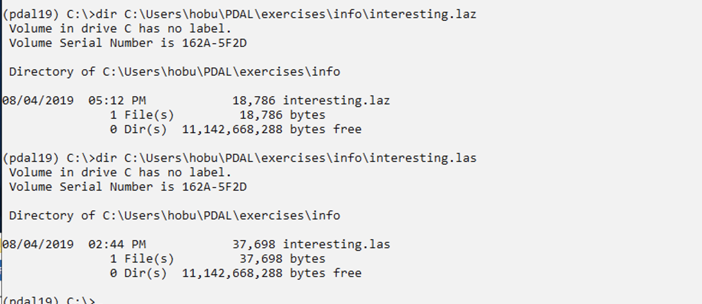

Compression¶
Exercise¶
This exercise uses PDAL to compress ASPRS LAS data into LASzip.
Issue the following command in your Anaconda Shell:
pdal translate ^ c:/Users/hobu/pdal/exercises/translation/interesting.las ^ c:/Users/hobu/pdal/exercises/translation/interesting.laz
LAS is a very fluffy binary format. Because of the way the data are stored, there is ample redundant information, and LASzip is an open source solution for compressing this information
Verify that the data are in fact compressed:
dir c:\Users\hobu\PDAL\exercises\translation\interesting.laz dir c:\Users\hobu\PDAL\exercises\translation\interesting.las
{kind=link}
See also
LAS Reading and Writing with PDAL contains many pointers about settings for ASPRS LAS data and how to achieve specific data behaviors with PDAL.
Notes¶
- Typical LASzip compression is 5:1 to 8:1, depending on the type of LiDAR. It is a compression format specifically for the ASPRS LAS model, however, and will not be as efficient for other types of point cloud data.
- You can open and view LAZ data in web browsers using http://plas.io